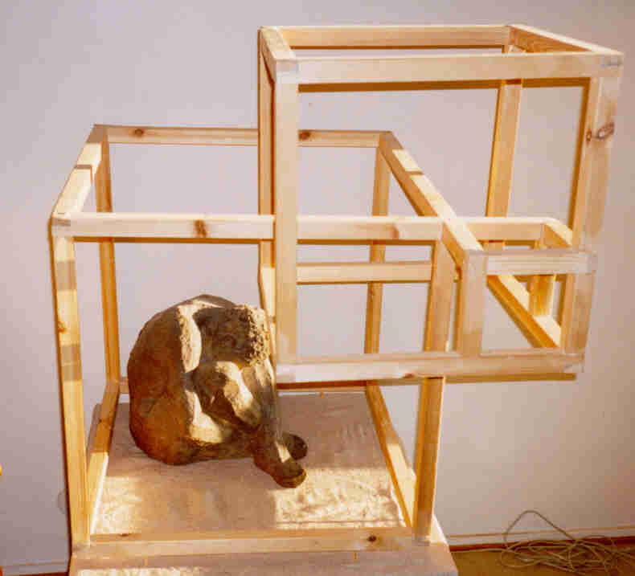
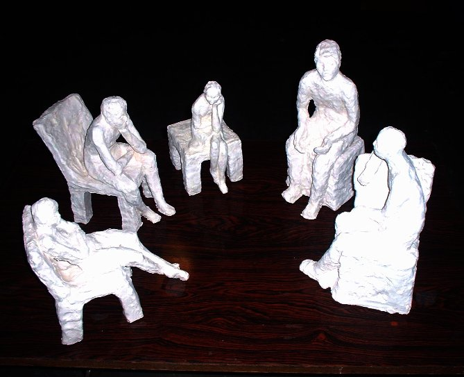

Hamlet
terrakotta

terrakotta
Siamese
terrakotta

Kiss
Poltettu savi

Prisoner of his Own Thoughts
terrakotta ja puu
lasikuitu fiberglass

Discussion
Poltettu savi Fired clay
|
TUOREIMPIA Recent Works |
GALLERY 1 Lasia Glass |
GALLERY 2 Lasia Glass |
GALLERY 3 Veistoksia Sculptures |
GALLERY 4 Pastellimaalauksia Pastels |
Laurin galleria 3veistoksia sculptures |
|
Hamlet terrakotta |
|
Othello terrakotta |
|
|
Siamilainen Siamese terrakotta |
|
Suudelma Kiss Poltettu savi |
|
|  |
Omien ajatustensa vanki Prisoner of his Own Thoughts terrakotta ja puu |
||
|
Balancing Act lasikuitu fiberglass |
|
||
|  |
Keskustelu Discussion Poltettu savi Fired clay |
||